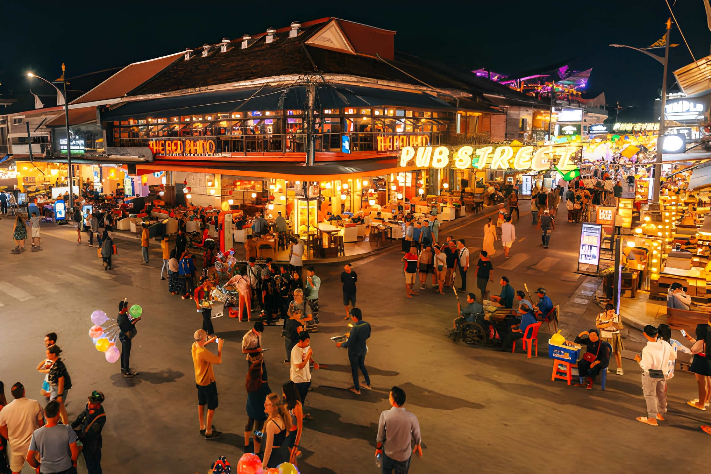

Cambodia is known for its ancient temples, rich traditions, friendly communities and fascinating cultural experiences. However, there is much more to discover beyond its famous historical attractions. As evening arrives, cities across the country come alive with shopping stalls, street food vendors, local entertainment and lively marketplaces.
Night markets in Cambodia offer an enjoyable way to experience local life while discovering traditional handicrafts, fashionable clothing, unique souvenirs and authentic Khmer cuisine. Whether you enjoy shopping, trying new dishes or simply exploring busy streets after sunset, these markets provide plenty of opportunities to experience the country's everyday culture.
From the bustling riverside atmosphere of Phnom Penh to the lively shopping areas of Siem Reap, each destination has its own character. Visitors can sample freshly prepared food, browse handmade products, meet local sellers and enjoy Cambodia's welcoming atmosphere.
Travellers planning a wider holiday can explore the Cambodia holiday packages offered by Arooha Tours while discovering the country's cultural attractions and local experiences.
Best Night Markets in Cambodia for Shopping and Food
1. Phnom Penh Night Market – A Shopper's Paradise
Phnom Penh Night Market, also known as Phsar Reatrey, is one of the capital's popular evening attractions. Located near the Tonle Sap River, it brings together shopping stalls, food vendors and a lively gathering space for locals and visitors.
Visitors can browse stalls selling clothing, handbags, footwear, jewellery, accessories and handmade souvenirs. The food section is another highlight, offering a selection of Cambodian dishes and freshly prepared snacks.
Things to Buy: Traditional scarves, handmade jewellery, clothing, bags and decorative souvenirs.
Food to Try: Grilled seafood, fried noodles, Khmer rice dishes and tropical fruits.
Its riverside setting and lively atmosphere make this market a pleasant place to spend an evening while exploring Phnom Penh.
2. Siem Reap Night Market – Enjoy Traditional Shopping
Siem Reap is famous for its proximity to the Angkor temple complex, but its evening shopping scene is also worth exploring. The city's markets bring together local products, handicrafts, clothing, souvenirs and food stalls.
Visitors can browse colourful stalls selling Cambodian silk, wooden products, paintings, handmade accessories and traditional clothing. Many vendors offer locally produced items, making the markets a useful place to discover the work of Cambodian artisans.
Food lovers can also explore nearby restaurants and street food stalls to sample traditional Khmer dishes after a day of sightseeing.
Shopping: Silk scarves, wooden handicrafts, paintings, jewellery and handmade bags.
Food to Try: Fish amok, beef lok lak, Khmer noodles and traditional desserts.
Spending an evening exploring Siem Reap's markets is a relaxing way to round off a day visiting the Angkor temples.
3. Angkor Night Market – Discover Cambodian Handicrafts
Angkor Night Market is one of Siem Reap's well-known shopping areas, particularly popular with visitors looking for souvenirs and locally made products. Its collection of stalls and small shops creates a colourful setting for an evening walk.
Shoppers can find silk products, wooden carvings, decorative items, paintings, jewellery and handmade gifts. These products offer a glimpse into Cambodia's traditional craftsmanship and make thoughtful keepsakes from a visit.
The market is also conveniently located near the city's entertainment and dining areas, allowing visitors to combine shopping with an evening meal.
Things to Buy: Silk accessories, handmade decorations, artwork, jewellery and Cambodian souvenirs.
4. Battambang's Evening Markets – Experience Local Culture
Battambang has a more relaxed atmosphere than Cambodia's busiest tourist destinations. Its local markets and nearby evening food stalls offer an opportunity to observe everyday shopping habits and enjoy regional food.
Visitors can find fresh tropical fruits, local snacks, clothing, household products and affordable everyday items. Food vendors serve noodles, grilled dishes, rice-based snacks and traditional sweets.
Rather than a large tourist-focused night market, Battambang's evening market areas provide a more local experience. They are worth exploring for travellers who want to see a quieter side of Cambodian life beyond the main attractions.
5. Kampot's Evening Food Stalls – Enjoy a Relaxing Night
Kampot is a charming riverside town known for its peaceful surroundings, scenic landscapes and famous pepper plantations. Its evening food stalls and small shopping areas offer a relaxed atmosphere for visitors looking to enjoy the town after sunset.
Travellers can browse local products, souvenirs, clothing and handicrafts while enjoying the welcoming atmosphere. The riverside setting also makes Kampot a pleasant place to spend an unhurried evening.
Food to Try: Grilled seafood, Cambodian noodles, tropical fruits, rice snacks and traditional desserts.
Kampot is particularly appealing to couples and families who prefer quieter evening experiences rather than crowded shopping areas.
Best Cambodian Street Foods to Try at Night Markets
Sampling local food is one of the most enjoyable parts of exploring Cambodia's evening markets. Khmer cuisine uses ingredients such as fresh fish, rice, coconut milk, herbs and aromatic spices to create distinctive flavours.
Here are some popular Cambodian dishes and snacks worth trying:
- Fish Amok: A classic Cambodian dish made with fish, coconut milk and aromatic spices, traditionally steamed in banana leaves.
- Beef Lok Lak: Stir-fried beef served with rice, vegetables and a flavourful dipping sauce.
- Nom Banh Chok: Traditional Khmer rice noodles served with a fish-based curry sauce and fresh vegetables.
- Kuy Teav: A comforting noodle soup prepared with broth, herbs and meat or seafood.
- Grilled Seafood: Freshly grilled prawns, squid and fish seasoned with local ingredients.
- Fresh Tropical Fruits: Mangoes, pineapples, dragon fruit, bananas and fresh coconuts are popular choices.
Trying these local specialities is a great way to understand Cambodia's food culture while enjoying the lively atmosphere of its markets.
Shopping Tips for Cambodian Night Markets
Shopping at Cambodian markets can be an enjoyable experience, especially when you know what to expect. A few simple preparations can make your visit more comfortable and help you get the most out of your time.
- Carry Cash: Keep some Cambodian riel and small US dollar notes available, as payment options can vary between vendors.
- Bargain Respectfully: Friendly bargaining is common at many souvenir stalls. Keep negotiations polite and reasonable.
- Check Product Quality: Inspect clothing, accessories and handicrafts before making a purchase.
- Try Local Food: Explore traditional Cambodian dishes and freshly prepared snacks from busy food stalls.
- Visit in the Evening: Many night markets become lively after sunset, although opening hours differ by location.
- Protect Your Valuables: Keep your phone, wallet and other belongings secure in crowded shopping areas.
- Wear Comfortable Shoes: Exploring different stalls can involve plenty of walking, so comfortable footwear is useful.
Best Time to Visit Cambodia's Night Markets
The period from November to February is generally one of the most comfortable times to visit Cambodia. The weather is usually drier, with relatively cooler conditions that make walking around outdoor markets and exploring cities more enjoyable.
Night markets can be visited throughout much of the year, but the rainy season may bring sudden showers, particularly between May and October. If you are visiting during this period, check the local weather and market opening hours before heading out.
For a more relaxed shopping experience, consider arriving in the early evening. You can browse the stalls before the busiest hours, enjoy local food and experience the markets as they become more lively after sunset.
Experience Cambodia Beyond Its Night Markets
Cambodia offers a fascinating mix of history, culture, food and natural attractions. While its evening markets provide a glimpse into local life, there are many other destinations worth including in a wider itinerary.
- Phnom Penh: Explore historical landmarks, riverside areas, museums and lively shopping markets.
- Siem Reap: Discover the Angkor temple complex, traditional handicrafts and exciting evening markets.
- Battambang: Experience local culture, traditional food and the charm of a quieter Cambodian city.
- Kampot: Enjoy peaceful riverside surroundings, countryside scenery and regional cuisine.
Combining sightseeing with local market visits allows travellers to experience Cambodia beyond its most famous attractions. It also creates opportunities to discover regional food, meet local sellers and appreciate the country's everyday traditions.
For travellers planning a trip, Cambodia holiday options from Arooha Tours can be explored alongside these destinations and cultural experiences.
Conclusion
Exploring Cambodia's night markets is a wonderful way to discover the country's shopping traditions, local craftsmanship and delicious street food. From the lively riverside setting of Phnom Penh Night Market to the handicraft stalls of Siem Reap, each destination offers a different evening experience.
Whether you want to buy handmade souvenirs, sample authentic Khmer dishes or simply enjoy the atmosphere of a busy local market, these places offer plenty to discover. Smaller evening markets and food stalls in destinations such as Battambang and Kampot also provide a glimpse into everyday Cambodian life.
With its ancient temples, welcoming communities, cultural attractions and vibrant food scene, Cambodia has plenty to offer beyond its famous landmarks. Exploring its markets can add another memorable dimension to your journey.